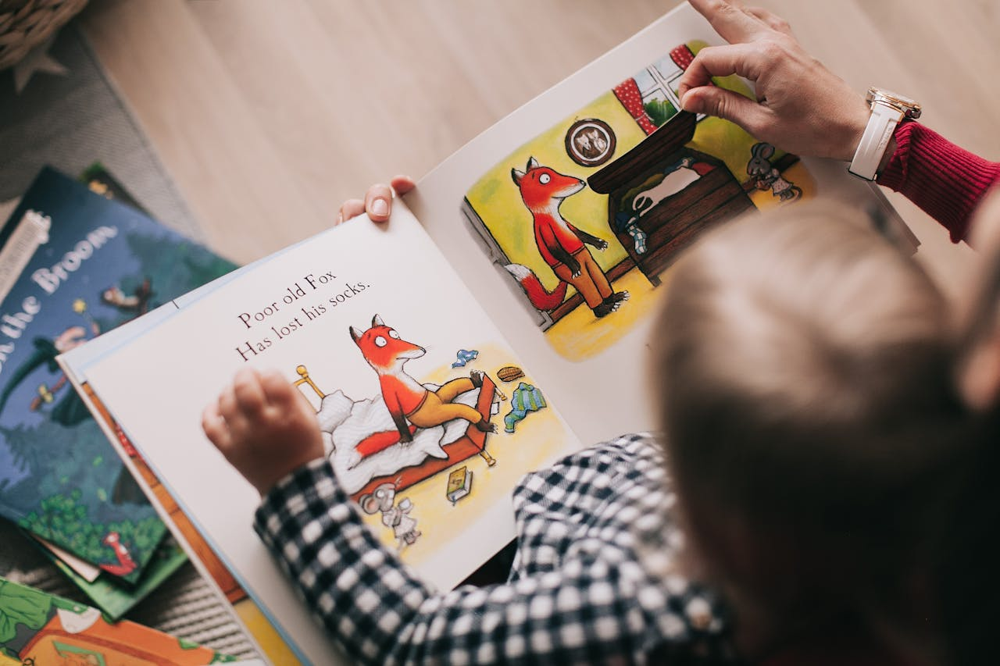
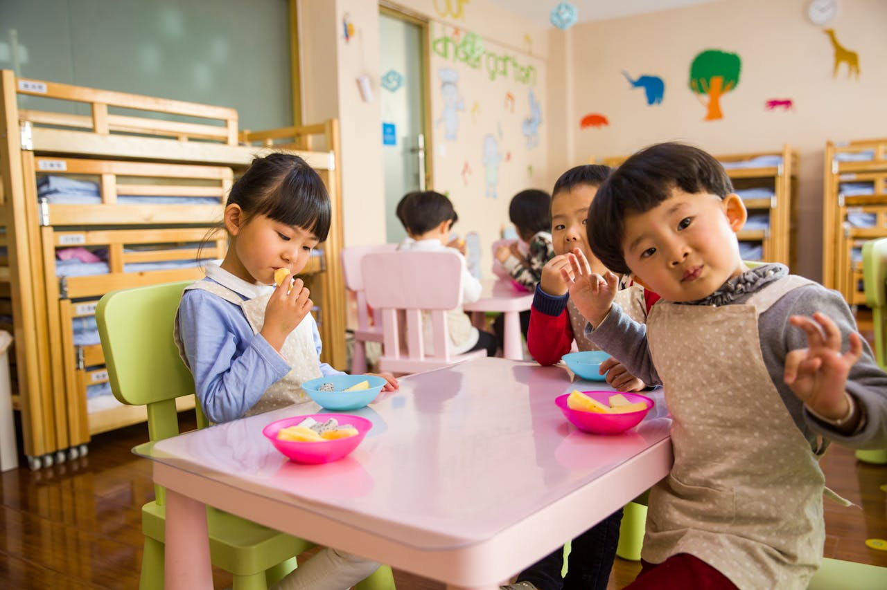

Think Ahead. Guess Smart. Learn with Confidence.
Speculative decoding helps kids predict what comes next before seeing the answer. It turns learning into an exciting thinking game instead of a boring task. Children actively use their imagination, logic, and curiosity. This approach strengthens reading, decision-making, and problem-solving skills. Mistakes are welcomed as part of learning, not something to fear. Every guess helps young minds grow smarter and more confident.

🧠 Boosts Thinking
Speculative decoding encourages kids to guess before knowing the answer. This process activates critical thinking and reasoning skills. Children learn to connect ideas and patterns naturally. Their brain stays active, curious, and engaged. Thinking becomes fun, not forced.

📖 Improves Reading
Kids learn to predict words and meanings while reading. This strengthens comprehension and vocabulary skills. Stories become easier and more enjoyable to follow. Reading turns into an interactive experience. Confidence grows with every page.
🎯 Builds Decisions
Speculative decoding teaches kids to make thoughtful choices. They learn how to select the best option and adjust if needed. Decision-making becomes quicker and smarter over time. Kids understand that choices lead to learning. Every decision builds confidence.

😊 Fear-Free Learning
Children learn that being wrong is okay. Each mistake becomes a chance to learn and improve. There is no pressure—only encouragement. Kids feel safe to try new ideas. Learning becomes joyful and stress-free.